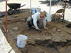

SBSA 224s/324s: Archaeology: From Map to Museum

This course is an introduction to the methods, principles, and practices of field archaeology. It will combine in-class lab and discussion sessions with field studies in historical archaeology.
|
Spring 2000 Syllabus
An exploration of the spectacular archaeological, epigraphic, and historical discoveries that have revolutionized emerging perspectives on the culture and civilization of the ancient Maya of southern Mexico and Central America. |
SBSD 248/348: Ancient Maya Civilization |
|
SBSM 216/316: Technical Imaging: Artifact and Historic Photo Restoration |
Spring 2000 Syllabus
This lab practicum provides a hands-on introduction to those basic camera skills and photographic methods necessary for documenting archaeological sites and historic materials. The objective of this section is to provide archaeology and other social science students with the necessary skills for producing effective images in both film media and digital formats. |
|
An exploration of the rise and fall of the indigenous states and civilizations of sub-Saharan Africa. Emphasis on the rise of civilization in precolonial or Black Africa, and to a lesser extent, Africa's relations with Eurasia. Ancient cultures, kingdoms and states examined include those of dynastic Egypt, Kush, Axum, Jenne, Zimbabwe, the Swahili complex, and Benin and West Africa. |
SBSC 283/383: Lost Civilizations of Africa and Eurasia |
|
SBSA 224s/324s: Archaeology: From Map to Museum
|
Fall 1999 Syllabus
This course is an introduction to the methods, principles, and practices of field archaeology. It will combine in-class lab and discussion sessions with field studies in historical archaeology. |
|
Fall 1999 Syllabus
This course is devoted to the creation of a museum education program for the Old Mission and community of San Juan Bautista. Student projects center on the development of museum exhibits, artifact displays, and multimedia instructional materials and educational resources celebrating this early California community. |
SBSA 264s/364s: Museum Education Project |
|
SBSC 308: Professional Assessment Lab |
Focuses on the mediated development of those academic, technical, and communications skills needed for professional success in the behavioral and social sciences. |
|
This field-based course entails an on-site exploration and application of methods and practices in the analysis and assessment of archaeological and ethnohistorical data and its interpretation. Student projects and project-based courses center on the excavation of colonial period architectural remains, and the documentation and historic preservation of the mission complex of San Juan Bautista. |
SBSA 367: Applied Field Methods in Historical Archaeology 
|